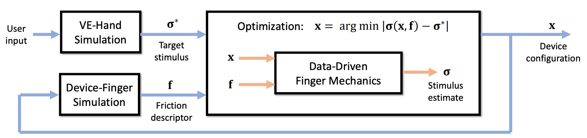
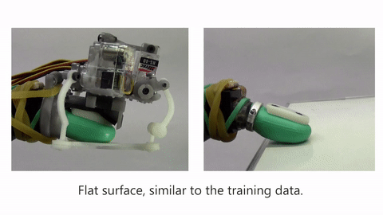
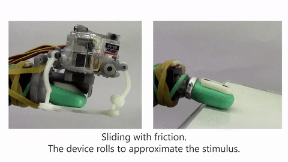
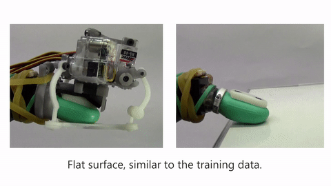
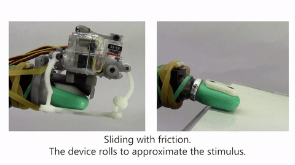

Description and Results
Our tactile rendering algorithm takes as input a target tactile stimulus, and computes as output a device configuration that produces the best-matching stimulus. Internally, the algorithm staggers the computation of the device configuration and the friction state, to handle efficiently the dependency between the device trajectory and the resulting stimulus. Furthermore, the algorithm leverages various device-skin simulation models to produce computational descriptors of tactile stimulus and friction state.
Below we see our tactile rendering method in action. A virtual hand follows the user and interacts with virtual objects. On each frame, we compute the tactile stimulus (i.e., skin stress) in this simulation, and use it to find the tactile device configuration that produces the best-matching stimulus (see insets). Then, we render this device configuration to the user.

Below we depict an overview of our tactile rendering algorithm. On every frame, we obtain a target stimulus \(\mathbf{\sigma}^{*}\) (i.e., skin stress) from the VE simulation. Using the device configuration \(\mathbf{x}\) from the previous frame, we also compute a friction state \(\mathbf{f}\). Using both as input, we search for the device configuration that produces the best-matching stimulus. This search is formulated as a constrained optimization, which evaluates a data-driven model of skin mechanics on each iteration.
Our rendering algorithm succeeds to provide key tactile feedback when grasping and lifting objects. In the following example, subtle changes in grasping pose produce smooth device motion

We qualitative validation of tactile rendering on a BioTac sensor. We use the BioTac to interact with a set of real objects to obtain a sequence of target tactile stimuli. Then, we run our optimization-based algorithm to compute tactile device configurations that best match those stimuli. We show side-by-side comparisons of the rendered device configuration next to the real-world interaction that generated each target stimulus. We trained the rendering algorithm using only interactions of the BioTac with the tactile device, yet it succeeds to produce plausible renderings for unseen situations, such as contact with edges or deformable objects
 


